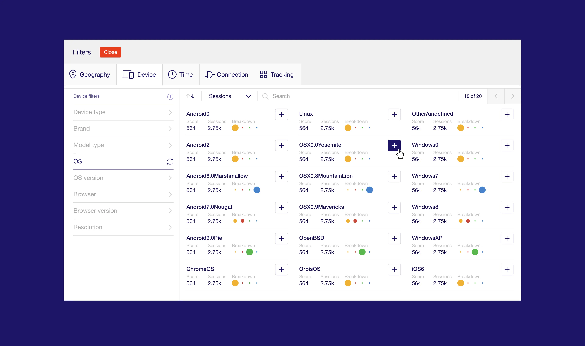
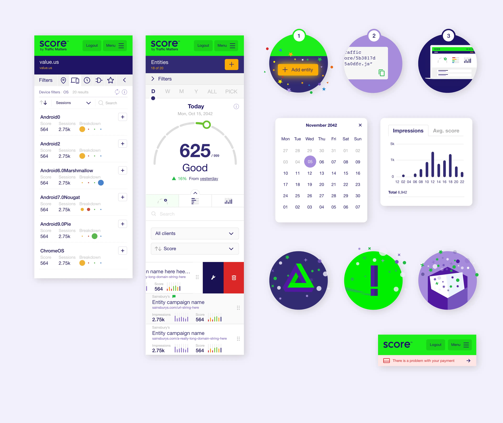
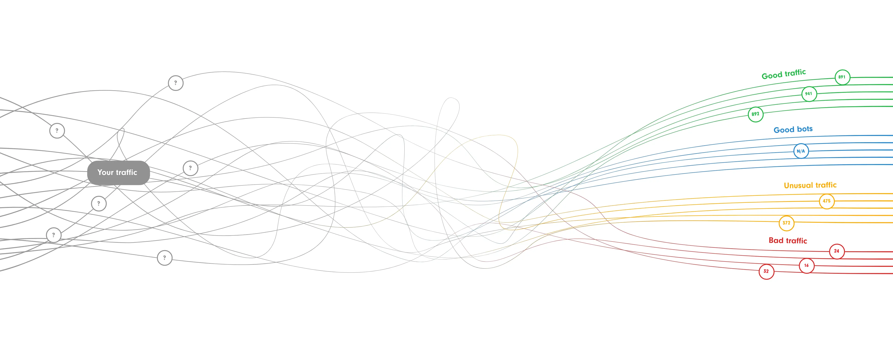
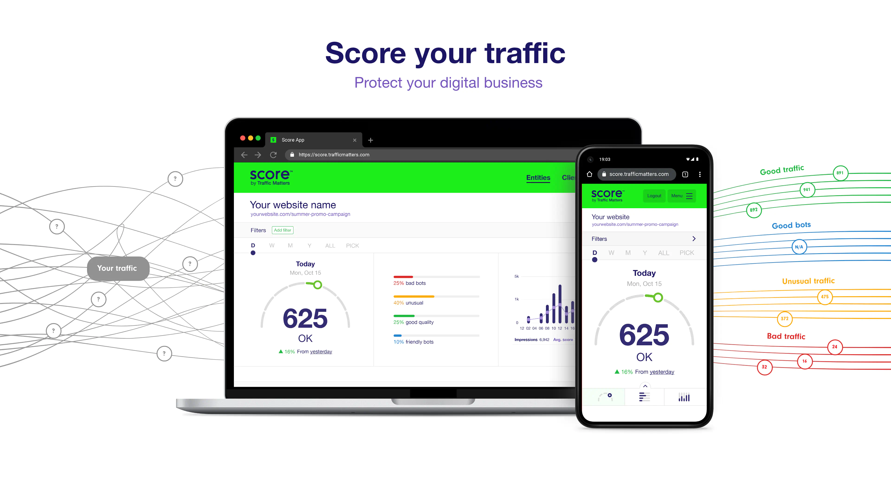
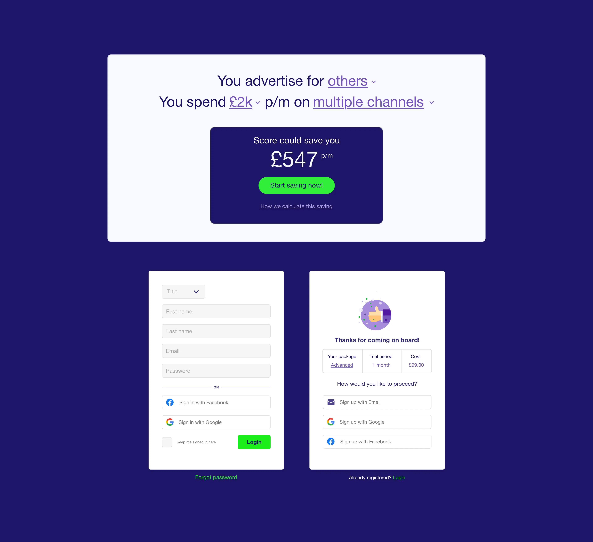
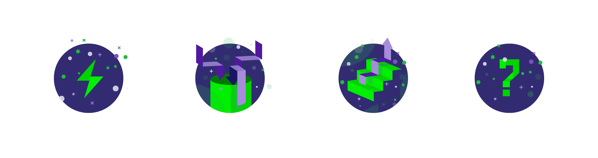
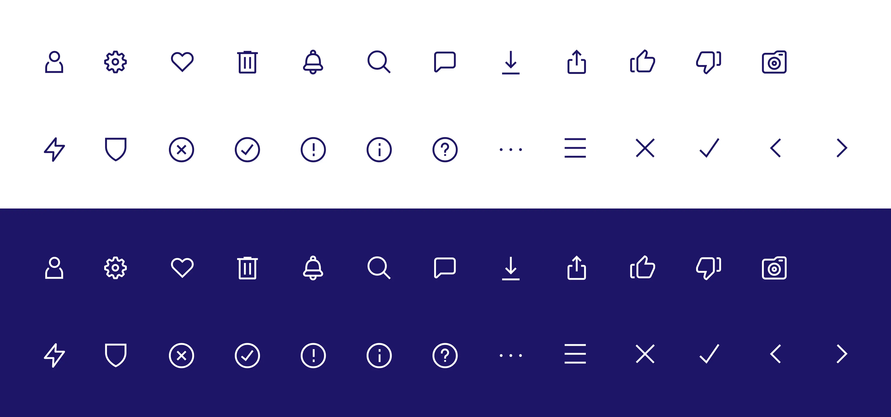
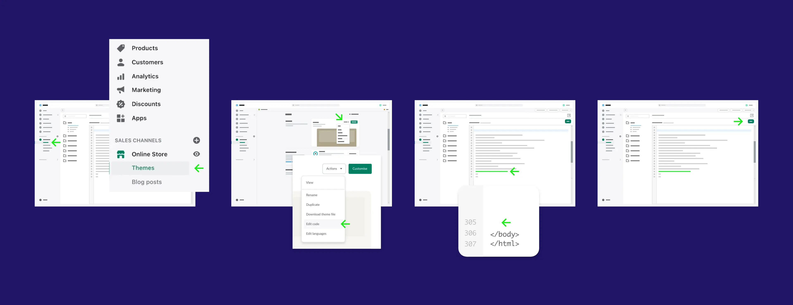
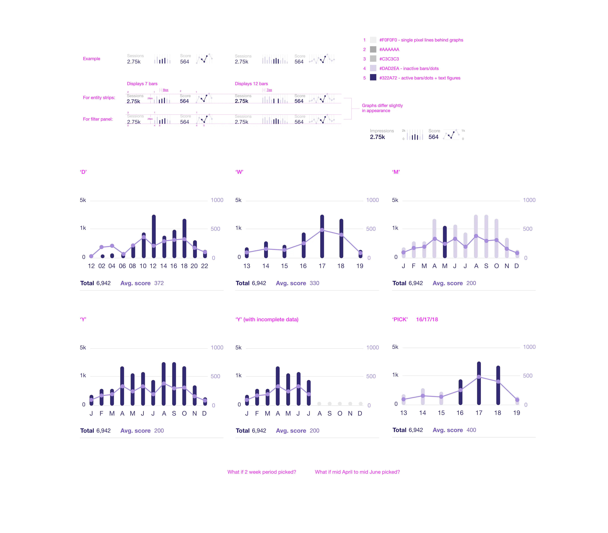

An innovative tech start-up wanting to build a web app that helps website owners gain more value from their online advertising. The app analyses traffic streams, using AI and Machine Learning, ensuring that advertising budgets are only spent on the most fruitful, legitimate traffic.
Filters - a drop down containing additive filters (see image below)
Date picker - facilitates date range adjustment of filtered set
Score gauge - average score of traffic within filtered set
Breakdown lines - the breakdown across four different types of traffic: bad or friendly bots and unusual or good traffic
Graph - allows the filtered traffic set to be viewed across a veriety of date ranges, options set via the date picker
Slider/hider for the three gauges on smaller screens
I coded the flat HTML, CSS and JS for all these components and then worked with a team to integrate it into an Angular framework.

The filters. This user interface is at the heart of the application, it enables users to have increasing granularity and understanding of their traffic through combinations of additive filters. (Mobile version shown below)
I designed and coded these JavaScript driven, SMIL animated gauges from scratch (bar the number revolution). As filters are added these gauges reflect the traffic breakdown and quality. I learnt a lot about SVGs and JavaScript SVG animation working on these.

A range of user interface design elements I crafted, each with its own level of complexity, most intend to provide clear functionality and information. Wherever feasible, I strive to infuse an element of delight into the user experience.

I needed to visually communicate to audiences the difference between understanding and not understanding who is visiting your website. After some sketching and a number of iterations, these lines hit the spot beautifully by flowing from a tangled grey mess to an organised and categorised form.

For the lead piece of artwork on the promotional website, I combined the app's user interface with the 'traffic lines' to harmoniously communicate its capabilities.

A panel from the promotional website encourages users to 'find out what their savings could be' by using Score. Underneath, a couple of sign-up panel examples.

I led the naming of the businesses and created a custom typeface for both wordmarks. Score and Traffic Matters are the child and parent brands respectively. Score essentially ‘does what it says on the tin’, gives users scores for their Internet traffic.

A selection of larger style icons that would sit in various header and announcement windows conveying ideas, data-gathering, upgrading and questions.

A selection of the Score app's user interface icons I designed. There were also a number of micro icons for panels and user interface elements.

To help users install the 'Score snippet' code on their websites and to work alongside accompanying instructive text, I produced a number of visually simplified, mini-representations of the installation process on a variety of CMS platforms; shown here is the Shopify version.

Here is a snippet of one of many 'visual discussion' documents. In this case I was looking at the consistency of graphs in large and mini formats, from a content capacity, stylistic and user experience perspective.
We were consistantly pleased with James' work ethic, creative process, exceptional attention to detail and fantastic visuals! He helped us develop and launch our first product and brand leading to lots of happy customers. James offered creative solutions to difficult problems, ensuring great user experience and consistency throughout the project. His experience and skills ensured work was done on time and within budget, while communication was a breeze.